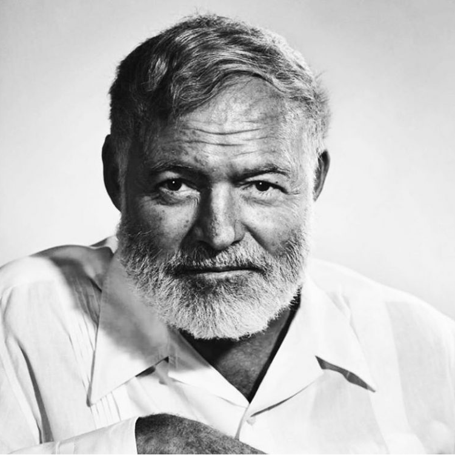

Ernest Miller Hemingway was an American author and journalist. His economical and understated style had a strong influence on 20th-century fiction, while his life of adventure and his public image influenced later generations. Hemingway produced most of his work between the mid-1920s and the mid-1950s, and won the Nobel Prize in Literature in 1954. He published seven novels, six short story collections and two non-fiction works. Three novels, four collections of short stories and three non-fiction works were published posthumously. Many of these are considered classics of American literature.